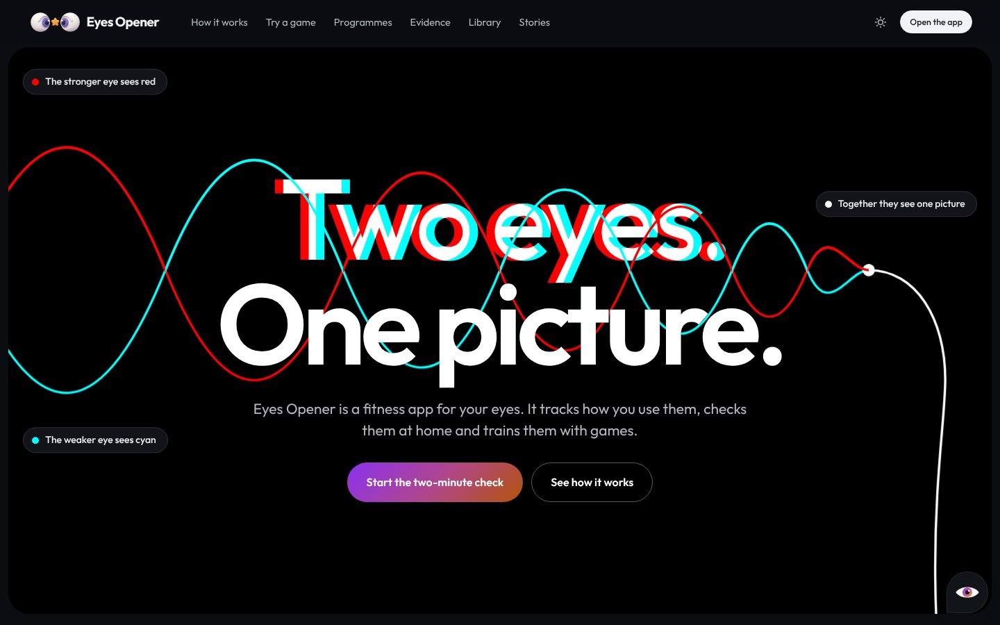

01
Eye care that feels like a fitness app
The home page says what Eyes Opener is in a few lines: check-ups, games, exercises and a community, for children and grown-ups, at home.
- For families, counsellors and schools
- Every game and exercise rests on published research
- Not a medical device: it says when to see an eye doctor
Computer · /